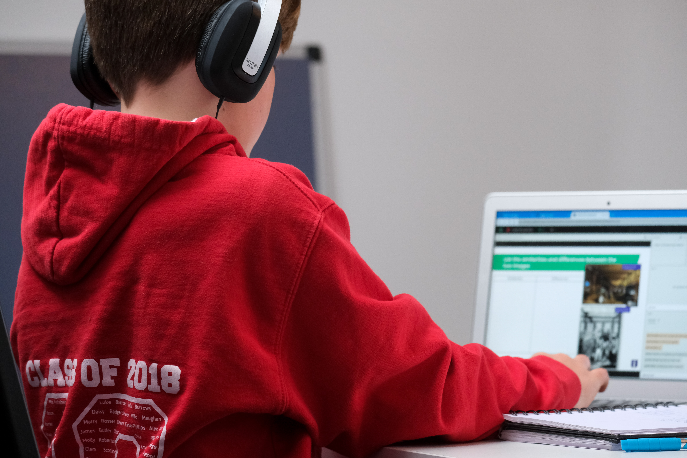
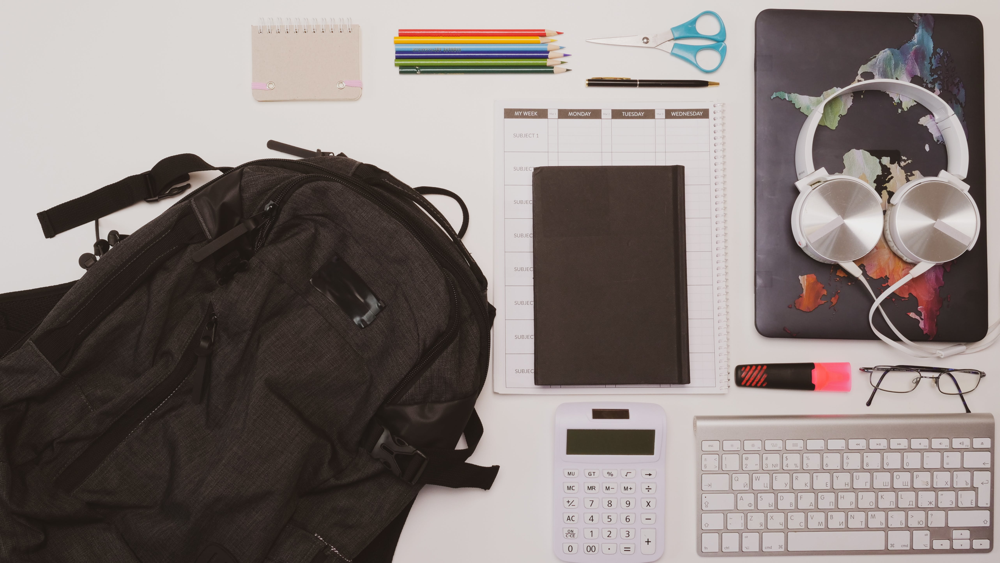

WEEK SEVEN LAB TASKS
Independent Learning
Task 1
The Stages of the Creative Process
Preparation
- Researching my topic
- Finding relevant sources
- Creating a Moodboard
Incubation
- Using my research to answer relevant questions
- Narrow down certain aspects of my topic
Ideation
- Idea is fully fleshed out
- Target audience is chosen
- Research for sources
- HTML and CSS decisions have been made
Evaluation
- My idea is worth pursuing as it is important
- I've seen information out there with a similar concept but not particularly on this topic
- I had to change my idea to carry out surveys on the website, as it wouldn't be adaptable for this coding software
- After my one on one meeting with my lecturer, they were impressed and interested to learn more about my project
Evaluation
- Final project has been created
- With all aspects decided
- Features are working
Task 2
Analyse the use of Images on the Web
"Digital Nation UK 2023"What are the images used for
- Aesthetics
- Education
Do they align with the websites key messages?
- This infographic is very fitting for this website
- As it explains statistics and information in a clear way
Images used with intent, which enhances information comprehension, retention, and appeal?
- This image is used/created for the intention of educational use
- It appeals to a wide audience range, as it may be simple and navigational, but it still presents information that is important for many individuals
Digital Poverty: The Facts
What are the images used for
- Aesthetics
- Education
Do they align with the websites key messages?
- This information is relevant to the website
- It is about digital poverty, this information gives basic statistical knowledge of what it is
Images used with intent, which enhances information comprehension, retention, and appeal?
- This image is used to present information
- It is appealing, with its large font size and dark font colour, that stands out against the white background
Task 3
Portfolio of Images




Mood Board
General Lab
Optimise Image for Web Use
Master Image
Image One

- Changed to greyscale
- Changed scale of image
- Width - 3200px
- Height - 2125px
- X/Y resolution - 72 pixels
- Cropped the image
- Saved as PNG
Exploring Alternative Options
- Changed to RGB
- Changed scale of image
- Width - 2000px
- Height - 1333px
- X/Y resolution - 180 pixels
- Cropped the image
- Saved as PNG